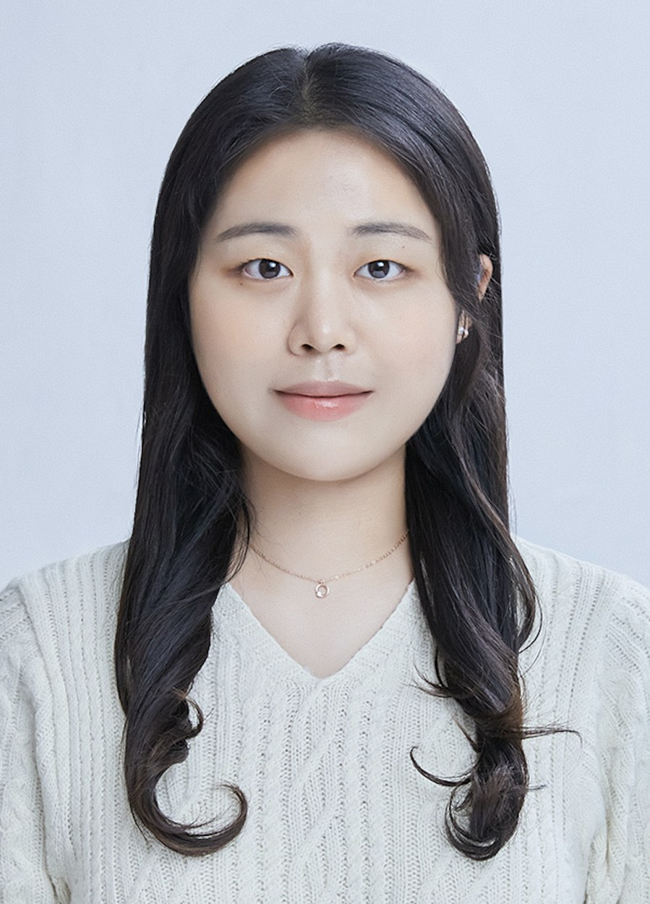

@wis-hyun
저는 I build 을 만듭니다.
숙명여자대학교 인공지능공학부 학생이자 SMU-NLP 연구실 인턴입니다. 신뢰할 수 있는 AI를 만드는 일 — 특히 LLM의 평가와 윤리·안전, 그리고 에이전트에 관심이 있습니다. An AI engineering student at Sookmyung Women's University and a research intern at SMU-NLP Lab. I want to make AI we can trust — with a focus on LLM evaluation, ethics & safety, and AI agents.

LLM 평가를 연구하는 SMU-NLP 연구실에서 연구자의 길을 시작한 기록입니다.Notes from the start of a research path at SMU-NLP Lab, where I work on LLM evaluation.
모델이 얼마나 잘하는지보다, 그 결과를 얼마나 믿을 수 있는지를 묻습니다 — 평가, 윤리, 그리고 에이전트.Less "how well does the model perform" and more "how far can we trust it" — evaluation, ethics, and agents.
저는 인공지능을 사람이 신뢰할 수 있는 기술로 만드는 일에 관심이 있는 AI 학생입니다. 관심은 LLM을 어떻게 제대로 평가할 것인가(Evaluation & Benchmarking), 모델이 안전하고 윤리적으로 행동하게 하려면 무엇이 필요한가(AI Ethics & Safety), 그리고 스스로 판단하고 행동하는 에이전트(AI Agents)로 모이고 있습니다. 다양한 프로젝트와 협업 경험을 통해 연구와 실제 응용을 잇고자 합니다.I am an AI student who wants to turn AI into technology people can trust. My interests are converging on how to evaluate LLMs properly (evaluation & benchmarking), what it takes for models to behave safely and ethically (AI ethics & safety), and agents that reason and act on their own. Through hands-on projects and collaborative experiences, I aim to bridge research and real-world applications.
2026년 10월부터 숙명여자대학교 자연어처리 연구실 SMU-NLP Lab(문현석 교수님)에서 연구 인턴으로 LLM 평가 연구에 참여하고 있습니다.Since October 2026 I have been a research intern at SMU-NLP Lab (Prof. Hyeonseok Moon), Sookmyung Women's University, working on LLM evaluation research.
"똑똑한 AI보다, 믿을 수 있는 AI. 그 기준을 만드는 사람이 되고 싶습니다.""Not just smarter AI — AI we can trust. I want to help build the standards that make it so."
— Sung Hyun Kim항목을 누르면 상세 내용과 현장 사진을 볼 수 있어요.Tap an item to see details and photos from the field.
AI 연구, 프로젝트 협업, 멘토링, 대학원 관련 이야기 — 어떤 연락이든 환영합니다.AI research, project collaboration, mentoring, or graduate-school talk — every message is welcome.